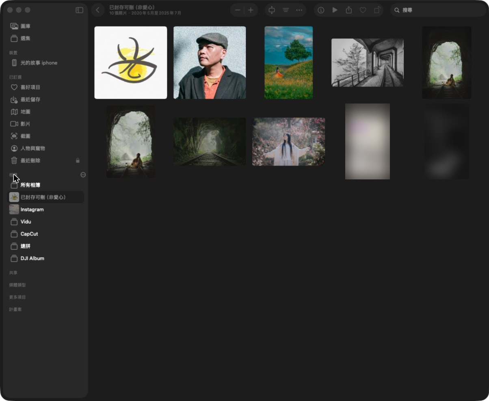
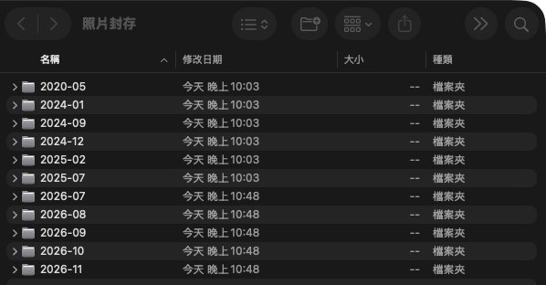

手機裡真的超多畫面：上課拍的簡報、出去玩的照片、隨手截的社群貼文和工具畫面，還有陪跑錄的一小時影片，全部混在一起。一張一張刪，刪不完，也怕刪錯。
我用 iPhone 加 Mac，整理的方法是靠 iCloud 同步：讓我的 Agent（能操作電腦的 AI，我用 Claude Code）整理電腦版「照片」App 的圖庫，手機不用接上電腦。電腦這邊整理好，手機那邊跟著整理好。
- 用 iPhone 加 Mac，手機照片、截圖多到不想整理
- 想讓 AI 幫忙整理，但怕它亂刪、怕照片外流
- 照片裡有要報帳的、要剪片的、要查證的，不知道從哪裡分起
- 一張圖看懂：為什麼整理電腦版，手機就會跟著變乾淨
- 五個步驟，和我實際跑出來的數字
- 我給 Agent 定的四條規則（哪些留、哪些清、誰按刪除）
- 一段可以直接貼給你的 Agent 的提示詞
一張圖看懂：整理電腦版照片，手機跟著變乾淨
重點在中間那台 Mac。iCloud 照片開著的時候，手機和電腦看到的是同一個圖庫，所以 Agent 不用碰手機，只要整理電腦版的照片 App 就好。
先分類：照片要拿來做什麼，不一樣
Agent 用 Mac 內建的文字辨識和場景辨識，在電腦本機讀照片，再對 Google 日曆，看那個時間我在哪裡。分出來的類別，每一類後面接的事都不一樣：
交給記帳
做摘要讓我勾
講是什麼、怎麼用
整理重點
跟簡報放一起
剪生活影片
建名片卡
我看一眼
這次 810 個裡，出遊 288、活動現場 225、社群截圖 144、其他 65、一般截圖 49（工具畫面的 17 張在這裡面）、活動簡報 32、報帳 7、名片 0。
分完不自己決定，一組一組問我要拿來做什麼
分類只是知道「這是什麼」，要拿來做什麼，只有我知道。所以 Agent 把照片分成一組一組，一組一組問我：
這一步是我刻意要的。照片是拿來剪片、報帳還是查證，不是 AI 看得出來的事；但分好組、把選項排好給我按，可以交給它。
清手機的五個步驟
- 在 Mac 打開 iCloud 照片在 Mac 的照片 App 設定裡打開 iCloud 照片，選「最佳化 Mac 儲存空間」。手機的照片就會同步到電腦的照片 App，電腦空間也不會被原檔塞滿。
- 分類，問我用途就是上面兩段。按過愛心的照片，Agent 一律不動。
- 照月份上傳 Google 雲端硬碟匯出原檔，放進「照片封存／2026-08」這樣的月份資料夾，每個檔案比對大小和內容一致才算完成。
- 比對過的放進「可刪相簿」Agent 在照片 App 建一本相簿「已封存可刪（非愛心）」，只放已經比對過的照片。
- 我自己在手機刪在 iPhone 打開這本相簿，全選，選「刪除」。選「從相簿移除」只是拿出相簿，照片還在手機。電腦版跟著同步刪掉，刪掉的照片在「最近刪除」還會放 30 天。


我給 Agent 定的四條規則
| 規則 | 為什麼 |
|---|---|
| 按愛心的留手機，其他都清出去 | 手機上要留什麼，我按一下愛心就好，不用再跟 AI 解釋 |
| 沒特別指定的，照月份放雲端硬碟，電腦不留一份 | 電腦空間不夠用；雲端比對過了才清 |
| 我有指定的才另外放 | 像我跟老婆星星出去玩的照片，放電腦「圖片／2026」，一趟一個資料夾，例如「2026-08-22 星星 捷運三鶯線」 |
| 刪手機照片這一步我自己按 | Agent 只把照片放進可刪相簿，按下刪除的是我。Agent 本來也刪不了：照片 App 開給程式用的指令只有匯出、建相簿、加進相簿，沒有刪除。我覺得勉強還行，至少不用一張一張挑，全部存完、比對完，最後一口氣全刪 |
可以直接貼給你的 Agent 的提示詞
用 Claude Code、Codex 這類能操作電腦的 Agent。貼之前先準備好三件事：Mac 打開 iCloud 照片；Agent 能連到你的 Google 雲端硬碟（我用 rclone 這個小工具）；想讓它對照行程的話，再接上 Google 日曆。rclone 不會設定的話，可以請 Agent 幫你裝好、帶你登入 Google，登入那一步你自己按。下面「給你的 AI 讀的技術備忘」可以一起貼給它。
還沒有能操作電腦的 Agent，也可以先做頭尾兩步：在 Mac 打開 iCloud 照片，自己把要清的照片備份好、放進一本相簿，再到手機一次刪。
我用 iPhone 加 Mac，Mac 已經開 iCloud 照片。請幫我整理電腦版照片 App 的圖庫： 0. 先只拿 10 張試跑一次，整個流程跑完、我看過結果，再跑全部。 1. 在本機辨識每張照片，分成報帳、名片、社群截圖、工具截圖、活動簡報、活動現場、出遊、其他。辨識用電腦內建功能，照片原檔不要送去外部 AI 服務辨識（第 4 步上傳到我自己的雲端硬碟是備份，不算）；辨識出的文字如果是私訊或帳務內容，摘要時只標「私人訊息」，不抄細節。 2. 我按過愛心的不要動。 3. 長影片、出遊、活動、截圖這幾類，一組一組問我要拿來做什麼，不要自己決定。 4. 其他照片匯出原檔，照月份上傳到我的 Google 雲端硬碟「照片封存/YYYY-MM/」，每個檔案比對一致才算完成。 5. 比對過的放進照片 App 一本相簿「已封存可刪（非愛心）」，我自己在手機刪。不要幫我刪任何照片。 6. 我問完用途的那幾組，照我的回答處理；我有指定資料夾的，另外放到我指定的位置。
重點整理
- iPhone 加 Mac 開 iCloud 照片，整理電腦版照片 App，手機會跟著變乾淨
- 分類在本機做，照片原檔不出門
- 分完一組一組問你要拿來做什麼，不讓 AI 自己決定
- 照月份上傳雲端硬碟，逐檔比對一致才放進「可刪相簿」
- 愛心留手機、刪除自己按
- 讓 AI 幫我盯官方 LINE，一登出就斷？｜我讓它自己按登入，和我為什麼敢交給它 這一篇只講照片，那篇講哪些事我敢交給 AI 自己按、哪些留給自己
- 都 Agent 時代了，還要學 n8n 或設計自動化小程式嗎？｜知識工作者的分工法，固定的交給程式，要判斷的才交給 Agent 分類交給程式、用途問我，就是那篇的分工法
給你的 AI 讀的技術備忘（人可以跳過）
- 讀圖庫：複製
Photos.sqlite（連同 -wal、-shm）再讀，ZASSET 的 ZFAVORITE＝愛心、ZKINDSUBTYPE 10＝截圖；縮圖在圖庫resources/derivatives。 - 本機辨識：Swift 呼叫 Vision 的 VNRecognizeTextRequest（zh-Hant）、VNClassifyImageRequest、VNDetectBarcodesRequest。
- 匯出原檔不需另開照片權限：AppleScript
tell application "Photos" to export {media item id "UUID/L0/001"} to (POSIX file 資料夾 as alias) with using originals，一張一個子資料夾避免同名互蓋；最佳化儲存時會先從 iCloud 下載。 - 建相簿：
make new album named …、add {media items} to album …，AppleScript 沒有刪除照片的指令，刪除留給使用者。 - 上傳與比對：
rclone copy到 Google 雲端硬碟，再rclone check --one-way；比對通過的才放進可刪相簿。
我是江江教練
AI 教練與一人公司創辦人
對 AI × 知識管理、隱性知識提煉有興趣？歡迎加入我的 LINE 社群。我每月固定舉辦兩場免費線上講座，分享實戰經驗與方法論。如果你對這些主題感興趣，想持續學習，或是有顧問需求，都歡迎先從社群開始。
主要討論：
- 善用 AI 作為思考夥伴，提升決策品質與思考深度。
- 把知識、經驗，整理成提示詞、技能包、知識庫，讓 AI 能靈活運用。
每個月兩場免費講座。